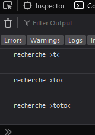

- Mise en place
- Fichiers disponibles
-
Créez votre répertoire de travail, et récupérez la base issue du tp4 de r102 (pour récupérer le fichier .zip, utilisez le clic-droit + save link As...)
-
Dans votre navigateur de prédilection, créez les signets des utilitaires
html/cssde base, à savoir : -
Gardez aussi un signet vers un interpréteur javascript (pour le cas où vous devriez tester un mini bout de code)
-
Historisez votre production : pour chaque tp, pour chaque exercice, créez un sous-répertoire ou bien, utilisez un logiciel de versionning, comme par exemple
git
-
- Fichiers disponibles
- L'événement archétype : clic sur bouton
-
Créez votre nouvelle copie du squelette précédemment récupéré. Renommez-la. Ajustez les titres et footer qui doivent l'être (sauf si vous êtes jacques ales bianchetti, auquel cas, vous avez l'air bien fatigué, prenez donc une retraite bien méritée…).
- V1
Dans le
aside, ajoutez un premierp, et placez-y un bouton. Donnez unidau bouton, et faites en sorte qu'il affichage initialementHello !En utilisant l'attribut
onclickde l'élémentbutton, associez l'appel de la fonctionrajoute_un_clicà l'événement de clic sur ce bouton. -
Dans le fichier
index.js, définissez la fonctionrajoute_un_clic. Cette fonction doit :-
Récupérer le bouton grâce à
getElementById
(dans le code de la fonction, utilisez directement l'idque vous avez choisi à la question précédente) -
Récupérer la string affichée par le bouton grâce à son
.innerText -
Si cette valeur n'a pas encore été modifiée, changez-la, et saluez l'utilisateur (voir : alert)
-
Si cette valeur a déjà été modifiée, affichez une salutation différente.
-
- V2
A la suite du premier bouton, rajoutez-en un second , sans identifiant, mais avec le même texte.
-
Dans le fichier
index.js, définissez une seconde version de la fonction réagissant au clic :
function rajoute_un_clic_alt(that){...}
Cette fonction attend une référence au bouton qui est cliqué (le paramètrethat)Dans le
html, associez l'appel de cette fonction au clic sur le second bouton, en passant ce bouton comme premier argument :
rajoute_un_clic_alt(this)
Remarque : ici this suit la même convention qu'enc++ou enjava(voir cours)La fonction reçoit le bouton sur lequel le clic a eu lieu : plus besoin d'utiliser
getElementByIddonc. Adaptez le code de la v1
-
- Clic sur un élément quelconque du
DOM-
(Rappel) Historisez : créez votre nouveau sous-répertoire, et préparez-le (en particulier, débarassez-vous des deux précédents boutons)
-
-
Dans le
aside, avant les paragraphes, ajoutez un tableau contenant quatre noms de couleurs (choisissez des noms de couleurscssvalides)
-
-
Dans le fichier
index.js, on veut associer les clics se produisant sur sous-arbretableavec une fonction qui change la couleur de tous les paragraphes dans leaside.-
Récupérez le tableau grâce à
querySelector('table')
(cela suppose qu'il n'y a qu'un tableau, sinon il faudrait un sélecteur plus précis) -
Associez au tableau une fonction callback
change_couleurpour l'événement clic grâce à :
.addEventListener('click',change_couleur) -
Pour que ces instructions aient un sens, il faut que le tableau soit construit. Un manière est d'attendre pour faire ce travailler que l'événement
DOMContentLoadedse soit produit.Placez donc les instructions que l'on veut faire sur le tableau dans une callback qui associée à
DOMContentLoadedavec le code suivant :
document.addEventListener("DOMContentLoaded", (event) => { … })Ce code peut être placé directement dans le fichier
index.js, sans besoin de main ni d'autre artifice
-
-
Définissez maintenant la fonction
change_couleur; elle doit :-
Recevoir l'événement en paramètre
-
Accéder à la case cliquée grâce à attribut
.targetde l'événement
(remarque : s'il n'y a pas de trous dans l'affichage de votre tableau, on est sûr de cliquer sur une case ; sinon, il faudrait vérifier…) -
Récupérer le nom de couleur que la case contient (
.innerText) -
Récupérer les paragraphes de texte en utilisant
.querySelectorAllet le sélecteur adapté -
Itérez sur les paragraphes visés, grâce à la méthode
forEachutilisable sur le résultat de.querySelectorAll:Pour modifier la couleur,
forEachreçoit une fonction. C'est elle qui modifie l'attribut.style.colorde l'élément dudomen cours de traitement dans une itération de la boucle (voir exemple mdn)
Remarque : aidez-vous pendant le codage par l'utilisation de
console.log( '...' )→ affichage dans l'inspecteur, ongletConsole -
-
- Ajout d'un élément
-
(Rappel) Historisez : copier tout l'exercice précédent comme sous-répertoire initial pour cet exercice.
Conservez tout : nous allons compléter ce qui a été fait durant l'exercice précédent -
-
Ajoutez un
spanavant letable -
Placez dedans deux
inputdecolor, ayant chacun son propreid -
Rajoutez un bouton associé à une callback sur clic ; appelez-la par exemple
ajouter_deux_couleurs
-
-
Dans le fichier
javascript, définissez la callback. Elle doit :-
Récupérer chacun des deux
inputpour en extraire les couleurs sélectionnées (attributs.value) -
Créer un élément de contenu textuel pour chacune des
stringobtenues, aveccreateTextNode -
Ces
TextNodedoivent être ajoutés à deux nouvelles cases, que l'on placera ensuite dans le tableau.Pour créer les cases, utilisez
.createElementet le tag voulu (td).Les textes sont rattachés aux cases en indiquant que leurs textnodes sont des fils des
td, grâce à.appendChild -
A leur tour, les deux cases doivent être placées dans une ligne (
tr) -
Enfin, cette nouvelle ligne doit être ajoutée au corps (
tbody) du tableau (table)Pour cela, il faut d'abord le retrouver, avec
.querySelector
-
-
-
Testez l'ajout des deux cases
-
Testez le changement de couleur avec ces deux nouvelles cases
-
Peut-on faire des ajouts multiples ?
-
Que se passe-t-il si on recharge la page ?
-
- [Hors Sujet] Plus joli
Nettoyer la version que nous allons conserver (choix parmi 4 couleurs prédéfinies)
Vous pouvez utiliser des attributs custom, et voici les images des boutons
-
- Evénement clavier
Nous allons proposer une recherche dans les paragraphes de l'élément
main, au fur et à mesure que l'utilisateur tape dans une barre de rechercheRemarque : Il existait un événement
keypressqui a malheureusement été déclaré obsolète. Nous utiliserons donc soitkeyup, soitkeydown-
Ajoutez un élément
search, entre les élémentsasideetmain. A l'intérieur, placez uninputdetyperecherche, et retouchez un peu la mise en page si vous avez le temps (loupe)En utilisant l'attribut
onkeyupde l'inputspécifiez la callbackcherche_dans_paragraphes_de_main(this) -
Définissez la fonction, qui doit :
-
Récupérer la
stringcorrespondant à la recherche en accédant à l'attribut.valuede l'inputreçuConseil : rajoutez un
console.loget vérifiez que tout va bien jusque-là -
Pour chercher dans le texte d'un paragraphe, javascript a ce qu'il nous faut parmi les méthode de string
Utilisez la technique déjà vue combinant
querySelectorAllet une itération de callback via.forEachDans un premier temps, simplifions le problème. Si la chaine recherchée est présente dans un paragraphe, on donne a tout ce paragraphe un style prédéfini. Pour cela, créez une
classet affectez-la auxpvoulus (voir ajout/retrait de classe css)Attention : il faut aussi penser à retirer la classe des paragraphes non voulus ; en particulier, si la chaine recherchée est modifiée, voir vidée
-
Pour indiquer les cas où la recherche a échoué (sur l'ensemble des paragraphes de
main), vous pouvez exploiter la fonctionnalité de validation offerte parhtml5
(voir.setCustomValidity; à combiner avec les pseudo-classes:valid,:invalid, et éventuellement:focus)
-
-
La présentation précédente a un gros défaut : quand on trouve la sous-chaine, il est souvent difficile de voir où elle apparaît. Nous allons donc surligner ses occurrences en les plaçant dans des
span(vous pourrez réutiliser la classe précédente pour surligner)-
Créez une seconde callback
cherche_dans_paragraphes_de_main_v2. Son travail est similaire à celui de la première version, sauf au moment de colorier les hit de la recherche. Cette fois-ci, vous pouvez par exemple utiliser la méthode.replacedesstringpour ajouter autour des hit, les balisesspan(et laclasscss) -
Et là, c'est le drame !
Si à chaque hit vous rajoutez desspan, les recherches ne se comportent plus correctement, et lesspans'accumulent dans le documentNous allons utiliser une solution simpliste : dès le chargement du document, sauvegardons les textes originaux en ajoutant un attribut
data-text_orig="...". Vous pouvez automatiser cela avec l'événementDOMContentLoadedetquerySelectorAllLa callback
cherche_dans_paragraphes_de_main_v2utilisera cette sauvegarde du texe original pour faire ses recherche/comparaison et pour remettre dans un état propre les paragraphes quand lesspandeviennent inutiles/génants
-
-
- Déplacer un élément (à l'affichage)
-
Dans la page images, nous allons ajouter quelques cadres et filtre, applicables aux photos de l'album :

Vous pouvez utiliser ces images, ou rechercher les vôtres (en veillant à ce qu'elles aient une certaine transparence, ou bien la superposition ne fonctionnera pas)
-
Disposez les images dans un
aside, avant lemaincontenant l'album. Pour la technique que nous allons utiliser, manipuler desimgne va pas être le plus simple. Créez donc desdiv. Donnez-leur unidà chacun. Utilisez les cadres et filtres comme images de fond de cesdiv. Retravailler lecsspour obtenir des tailles et une disposition convenable -
Pour modifier facilement la position de chaque
div, passez les enposition:relative;au niveau ducss. Forcez l'initialisation du déplacement, en ajoutanttop:1px;etleft:1px;(0pxriquerait d'être ignoré par certaines optimisations des navigateurs) -
Dans le fichier
javascript, une fois le chargement de la page terminé (événementDOMContentLoaded), associez la callbackmove_imgà l'événementmousemovede chacun desdiv.Conseil : on pourra se simplifier le codage en initialisation aussi une structure qui associe à chaque identifiant des
div, la paire de valeurs correspondant à la translation qui lui est appliquée -
Définissez la callback
mousemovequi va mettre à jour la position d'undiv:-
Elle reçoit en paramètre un objet décrivant l'évenement mousemove qui indique :
-
sur quel élément du
domil a lieu (.target) -
quel(s) bouton est enfoncé (
.buttons) -
de combien la souris vient de se déplacer(
.movementXet.movementY)
Pour plus de détails, voir la doc
-
-
Elle doit contrôler que le bouton gauche de la souris est enfoncé, et si c'est le cas,
-
Elle doit récupérer l'élément sur lequel a lieu l'événement (ou son
id, selon ce qui vous arrange le plus) -
Elle doit déterminer quel déplacement s'est produit
-
Elle doit mettre à jour le déplacement total depuis le chargement de la page
-
Et enfin mettre à jour les valeurs des propriétés css correspondantes
.style.leftet.style.top
Attention : Il y a 4 cadres/filtres ; il faut donc gérer séparément le déplacement total de chacun d'entre eux
Remarque : n'hésitez pas à vous aider de
console.logRemarque : Le navigateur n'est pas vraiment adapté à ce genre d'utilisation. Si la souris bouge trop vite, il aura du mal à suivre
Remarque : On pourrait améliorer la taille des cadres pour mieux correspondre aux images, mais ce n'est pas aussi trivial
-
-
-
- Déplacer un élément (dans le
dom)Nous allons permettre de modifier les places des photos de l'album. Cette fois-ci, il ne s'agit plus de provoquer une translation par du
css, mais de modifier les positions des éléments dans ledom(ce qui impliquera une modification du rendu)-
Ajoutez une checkbox pour activer le mode échange de place entre de deux photos
-
-
-
Une fois le document
htmlchargé, associez la callbackechange_imagesà l'événementclickde chaque photo -
Définissez la callback de façon à :
-
Vérifier que la checkbox est active
-
Si aucune photo n'est encore sélectionnée, marquer la photo cliquée : ce sera la première des deux à échanger
-
S'il s'agit de la seconde sélection, échanger les deux photos (et retirez le marquage de la première)

Pour réaliser l'échange, chaque élément dispose de l'attribut
.nextSiblinget de la méthode.insertBefore(_a_,_b_). Cette méthode doit être invoquée sur l'élément parent de _b_, pour placer _a_. L'attribut.parentNodeest donc aussi utile (consultez la documentation). Votre algorithme peut donc :-
Rechercher le père des photos
-
Déterminer qui précède _a_, avant de le déplacer
-
Déplacer _a_
-
Déplacer _b_
Petite vérification : Est-ce que cela marche bien lorsque _a_ | _b_ est en première | dernière place ?
-
-
-
Pour être propre, il reste pas mal de choses à contrôler et nettoyer. Ainsi, nous avons déjà mentionné le fait de désélectionner la première photo après l'échange. Il faut aussi penser à décocher la case. De plus, si jamais l'utilisateur décoche case avant de sélectionner une seconde photo, il faut aussi procéder à la désélection de la première.
-
{kind=link}